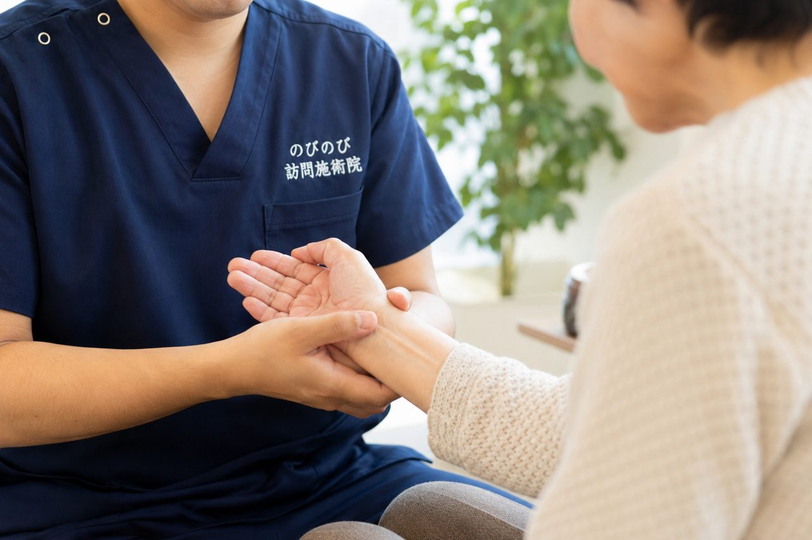

着替えに時間がかかるようになった、というご相談をいただくことがあります。着替えにくさ自体は病気ではありませんが、その裏側にある動きの制限には手当てのしようがあります。
この記事のポイント
着替えのしにくさは、腕が上がらない、指が伸びない、脚を持ち上げられないといった動きの制限から起きています。更衣そのものは療養費の対象ではありませんが、五十肩や腰痛症など医師が同意した病名があれば医療保険で施術を受けられます。着るときは動かしにくい側から、脱ぐときは動く側から。前開きの服を選ぶ。この2つでも負担は変わります。費用は1回の総額が3,950円、1割負担で395円です。
朝の着替えに30分かかる、と言われて
ご相談をいただくとき、症状より先に「着替えが大変で」という話が出てくることがあります。パジャマから普段着に替えるだけで30分。袖に腕を通すたびに顔をしかめられ、途中でやめてしまう日もある。そのうち、出かける予定のない日はパジャマのままになっていきます。
着替えは一日に二回も三回も繰り返す動作です。ここが滞ると外出も入浴も後回しになり、介助するご家族の腰にも負担が積み重なります。着替えにくさ自体は病気ではありません。ただ、その裏側にある動きの制限には、手当てのしようがあります。
袖が通らないとき、どこが動いていないのか
上着で引っかかるのは、たいてい肩と肘です。腕を横から上げる、後ろへ回す、手のひらを返す。この3つのどれかが減ると、袖に腕を入れる動きが途端に難しくなります。五十肩や腱板の傷み、脳血管の病気のあとの麻痺、長く動かさずにいたことによる硬さと、もとになるものはさまざまです。
下半身では股関節と膝、足首。ズボンや靴下は、座ったまま脚を持ち上げ、膝を曲げ、足先を通す動作の組み合わせです。股関節の前側が縮み、膝の裏が伸びにくくなると、足先まで手が届きません。指のこわばりが加われば、ボタンという最後の一手間で止まります。
「着替えにくい」だけでは、保険を使う理由になりません
医療保険で受けるには、医師が書いた同意書が要ります。同意書に記されるのは病名で、「着替えがしにくい」という状態そのものは病名ではありません。実際には、五十肩や腰痛症、頸肩腕症候群といった病名で同意をいただくことが多くなります。
書類の段取りは当院で進めます。かかりつけの先生へのお願いの仕方、受け渡し、有効期間が来たときの更新のご案内まで、こちらから声をかけます。ご家族にお願いするのは、申し込みのお電話と、マイナ保険証か資格確認書、負担割合証のご用意です。
着るときと脱ぐときで、順番を逆にします
介護の現場で長く使われてきた順番があります。着るときは動かしにくい側から先に、脱ぐときは動く側から先に。片方の腕が上がらない、痛む、麻痺しているという場合、この順番にするだけで引っかかりが減ります。
上着なら、痛むほうの腕を先に袖へ入れ、次に頭を通し、最後に楽なほうの腕。脱ぐときは楽なほうの腕を抜き、頭を抜いてから、痛むほうを最後にします。ズボンも同じです。この順番と、どこを支えると起き上がりやすいかを短く紙に書いてタンスの扉の内側に貼っておくと、ヘルパーも訪問看護もご家族も当院も、同じやり方で進められます。
服を替えるだけで、負担が変わることもあります
かぶりのシャツは、腕を上げて頭を通す動きが要ります。腕が上がらない方なら、前開きのほうが軽くすみます。袖ぐりにゆとりのあるもの、伸びる素材のもの、靴下なら履き口のゆるいもの。ボタンが留めにくければ、磁石やマジックテープで留められる衣類もあります。
ただ、着せやすさだけで選ぶと、ご本人の着たい服ではなくなります。長く着てきた服を手放すのは、思っている以上にこたえるものです。どんな服なら自分で袖を通せるかは、ご本人に聞きながら決めていただくのがよいと思います。ソックスエイドなどの自助具は、作業療法士や福祉用具専門相談員に見てもらうと体に合うものが選べます。
施術で手を当てているところ
上半身では、肩の前側、肩甲骨のまわり、腕を後ろへ回すときに働く筋肉、前腕の手のひらを返す動き、そして指。ここが硬いままだと、どれだけ順番を工夫しても袖は通りません。下半身では股関節の前側、膝の裏、ふくらはぎと足首、それに座った姿勢を保つ背中とお腹側をみます。手技や体を動かす練習は施術に含まれます。これらに追加の料金はかかりません。
感じ方には個人差があり、一度で見違えるようになるものではありません。医療機関の治療とリハビリが土台にあり、そこへ毎週の手当てを重ねていく位置づけです。朝の着替えがいちばんつらいという方には、その少し前の時間に枠を取ることもあります。曜日と時間を決めておくと、ご家族も予定を立てやすくなります。
「着替えたくない」の裏にあるもの
着替えを嫌がる、途中で怒る、手を払う。わがままに見える場面ですが、痛みを言葉にしにくい方の場合、それが唯一の合図ということがあります。袖を引くと眉が寄る、息を止める、腕を反対側へ引き込む。そうした反応の出るところは、たいてい動かすと痛むところです。
無理に袖を引っぱるのは避けてください。肩が抜けることがありますし、骨がもろくなっている方では骨折につながることもあります。血液をさらさらにする薬を飲んでいる方は、少し引いただけで広い内出血ができます。衣類のほうを腕に寄せていき、体は動かさない。その考え方で進めると安全です。
着替えは、皮膚を見られる数少ない時間でもあります
服を脱いだ状態は、ふだん隠れているところが見える時間でもあります。かかと、仙骨のあたり、太ももの外側の出っぱり、肩甲骨。押しても白くならない赤みが残っていたら、床ずれの始まりのことがあります。覚えのない内出血が増えていないかも、あわせて見ておきたいところです。
当院も訪問した日に同じところを確かめ、気づいたことはご家族と訪問看護へお伝えします。処置そのものは医療機関や訪問看護の役目ですので、当院が薬を塗ったり傷の手当てをしたりすることはありません。早く気づいて、早く診てもらう。そこまでが役割だと考えています。
保険を使ったときの負担と、訪問できる市と区
1回あたりの負担額から先にお伝えします。総額が3,950円で、そこから1割の方なら395円、2割の方なら790円をご負担いただきます。金額を決めるのは受けた回数で、施術にかかった時間の長さではありません。介護保険の支給限度額とはまったく別の枠組みですから、ヘルパーやデイサービスの回数を削っていただく必要もありません。なお、同じ部位について医療保険のリハビリと重ねて算定することはできません。
豊中市、吹田市、茨木市、箕面市、摂津市、池田市、尼崎市、伊丹市、それに大阪市の淀川区、東淀川区、都島区、北区、旭区。訪問しているのはこの14の市と区で、ここから外れる場所へはうかがえません。範囲の中であれば出張料などを別にいただくことはなく、住所によって金額が変わることもありません。お支払いは月ごとにまとめていただき、施術の内容が分かる明細をお渡しします。
着替えの工夫より、受診が先のとき
介助の途中で肩から音がして、そのあと腕が上がらない。転んだあとに足の付け根が痛くて立てない。こうしたときは施術ではなく整形外科の受診が先です。足の付け根の場合、大腿骨の骨折のことがあります。急に片方の腕が上がらなくなり、ろれつが回らない、顔の片側がゆがむといった症状が重なるときは、迷わず救急車を呼んでください。
そのほか、朝のこわばりが1時間以上続いて指が腫れている、覚えのない内出血が広がっている、数週間のあいだに着替えの動きが目立って落ちてきた。このあたりも年のせいと片づけず、主治医に診ていただきたい変化です。頭を打ったあと数週間たってから、ぼんやりする、ふらつく、頭痛が強くなるという場合は、慢性硬膜下血腫のことがあります。
よくある質問
着替えにくいだけで保険は使えますか？
「着替えがしにくい」は病名ではないため、それだけでは使えません。五十肩や腰痛症、頸肩腕症候群といった病名で医師の同意をいただく形になります。
着せる順番にコツはありますか？
着るときは動かしにくい側から先に、脱ぐときは動く側から先に。この順番にするだけで引っかかりが減ります。紙に書いてタンスの扉の内側に貼っておくと、関わる人みんなが同じやり方で進められます。
袖が通らないとき、引っぱってもいいですか？
避けてください。肩が抜けることがあり、骨がもろくなっている方では骨折につながることもあります。衣類のほうを腕に寄せていき、体は動かさないのが安全です。
どんな服を選べばいいですか？
前開き、袖ぐりにゆとりのあるもの、伸びる素材、履き口のゆるい靴下。ただ着せやすさだけで選ぶとご本人の着たい服でなくなります。どれなら自分で袖を通せるか、ご本人に聞きながら決めてください。